Introduction
BioT2Ex provides a package or toolkit to conveniently convert the tabular TXT file into a well-annotated Excel file. BioT2Ex could facilitate the downstream data interpretation of high-throughput genomic sequencing analysis.
BioT2Ex now supports the results of the RNA-seq analysis,ChIP-seq analysis and WES analysis.
Installing BioT2Ex
Installing in R
1 | if (!requireNamespace("BiocManager", quietly = TRUE)) |
Installing in Python
1 | pip install BioT2Ex |
Running BioT2Ex in R
Once installed the package, just go to your analysis directory, select the appropriate rendering functions according to the output results, and perform formatting conversion and style modification as desired.
Rendering the RNA-seq analysis results
Currently BioT2Ex’s render functions support the RNA-seq analysis results exported from edgeR , DESeq2 , limma and clusterProfiler.
render_edgeR
- Sort the output results descendingly based on the size of logFC (log2 transformed fold-change); add the “UP”- or “DOWN”-regulation annotations(abs(logFC)>1 & PValue<0.05);
- Add ENTREZID;
- Add GO number and GeneBank link of each gene;
- Convert the output to a file in XLSX format, add comment information for the header, and render the default table style, such as font, size, and column width;
- Add gradient color to the logFC column to indicate the expression level, with red representing up-regulation and blue representing down-regulation;
- Add statistical functions for some specific variables, and the statistical results are presented in additional worksheets, including the corresponding data results, and the visualized results are displayed in pie charts.
The original differential expression analysis was derived from the publication.
Procedures:
Provide the data you want to process as input, such as DGEExact(egdeR object) or imported external TXT/CSV/Excel files as data frame and the rownames should be gene symbol ;
For example:
or:
Provide the OrgDb (e.g., org.Hs.eg.db for human) for gene annotation, the corresponding taxonomy ID (e.g., taxID 9606 for human and the number of genes you want to output.
1 | #' @param input input data. [dataframe or DGEExact] |
Output effect:
- The first worksheet(edgeR-3.34.0) : The rendered differential expression analysis data:
The second worksheet(up_down) : The number of up-regulated , down-regulated expression and no difference were classified and statistically displayed in a pie chart. The pie chart will also be saved locally:
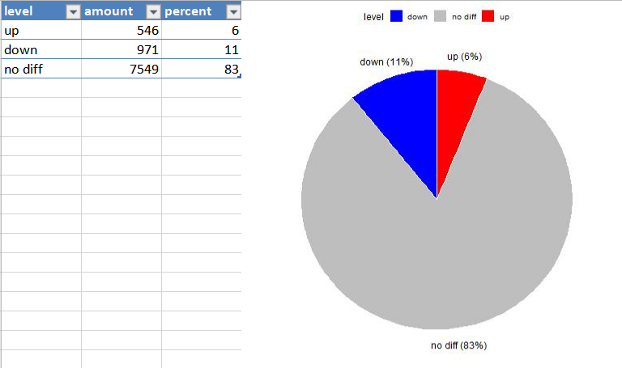
render_DESeq2
- Sort the output results descendingly based on the size of log2FoldChange (log2 transformed fold-change); add the “UP”- or “DOWN”-regulation annotations (abs(log2FoldChange)>1 & Padj<0.05);
- Add ENTREZID;
- Add GO number and GeneBank link of each gene;
- Convert the output to a file in XLSX format, add comment information for the header, and render the default table style, such as font, size, and column width;
- Add gradient color to the logFC column to indicate the expression level, with red representing up-regulation and blue representing down-regulation;
- Add statistical functions for some specific variables, and the statistical results are presented in additional worksheets, including the corresponding data results, and the visualized results are displayed in pie charts.
Compared with the render result of edgeR, the header comments will be different.The original differential expression analysis was derived from the publication.
Procedures:
Provide the data you want to process as input, such as DESeqDataSet(DESeq2 object) or imported external TXT/CSV/Excel files as data frame and the rownames should be gene symbol ;
For example:
or:
Provide the OrgDb (e.g., org.Hs.eg.db for human) for gene annotation, the corresponding taxonomy ID (e.g., taxID 9606 for human) and the number of genes you want to output.
1 | #' @param input input data. [dataframe or DGEExact] |
Output effect:
- The first worksheet(DESeq2-1.32.0) : The rendered differential expression analysis data:
The second worksheet(up_down) : The number of up-regulated , down-regulated expression and no difference were classified and statistically displayed in a pie chart. The pie chart will also be saved locally:
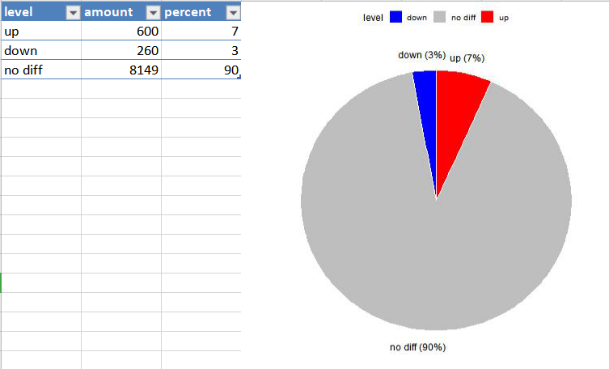
render_limma
- Sort the output results descendingly based on the size of logFC (log2 transformed fold-change); add the “UP”- or “DOWN”-regulation annotations (abs(logFC)>1 & adj.P.Val<0.05);
- Add ENTREZID;
- Add GO number and GeneBank link of each gene;
- Convert the output to a file in XLSX format, add comment information for the header, and render the default table style, such as font, size, and column width;
- Add gradient color to the logFC column to indicate the expression level, with red representing up-regulation and blue representing down-regulation;
- Add statistical functions for some specific variables, and the statistical results are presented in additional worksheets, including the corresponding data results, and the visualized results are displayed in pie charts.
Compared with the render result of edgeR, the header comments will be different.The original differential expression analysis was derived from the publication.
Procedures:
- Provide the data you want to process as input, such as imported external TXT/CSV/Excel files as data frame and the rownames should be gene symbol .
For example:
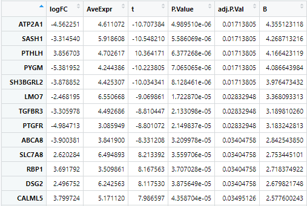- Provide the OrgDb (e.g., org.Hs.eg.db for human) for gene annotation, the corresponding taxonomy ID (e.g., taxID 9606 for human) and the number of genes you want to output.
1 | #' @param input input data. [dataframe or DGEExact] |
Output effect:
The first worksheet(limma-3.48.1) : The rendered differential expression analysis data:
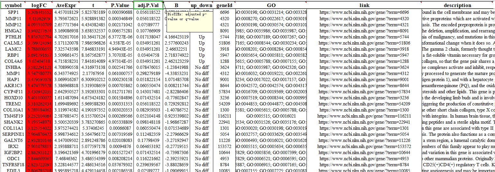The second worksheet(up_down) : The number of up-regulated , down-regulated expression and no difference were classified and statistically displayed in a pie chart. The pie chart will also be saved locally:
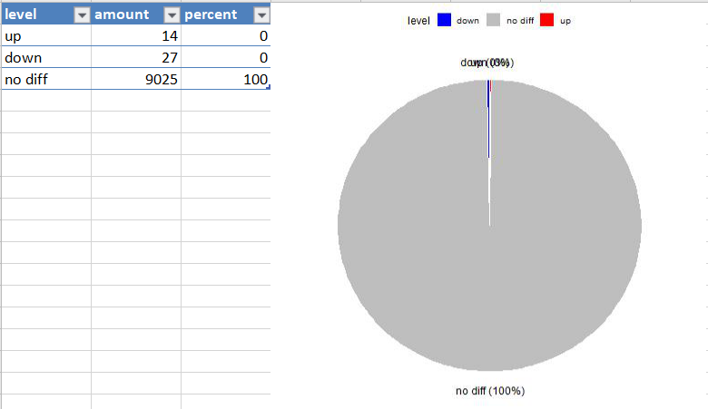
render_clusterProfiler
BioT2Ex now supports the results of the clusterProfiler GO analysis ,KEGG analysis and GSEA analysis(GSEA,gseGO and gseKEGG).
render_clusterP_GO
- Add the geneontology database link for each term;
- Convert the output to a file in XLSX format, add comment information for the header, and render the default table style, such as font, size, and column width;
- Add statistical functions for some specific variables, and the statistical results are presented in additional worksheets, including the corresponding data results, and the visualized results are displayed in pie charts.
The original differential expression analysis was derived from the publication.
Procedures:
Provide the data you want to process as input, such as Large enrichResult or imported external TXT/CSV/Excel files as data frame and the rownames should be gene symbol ;
For example:
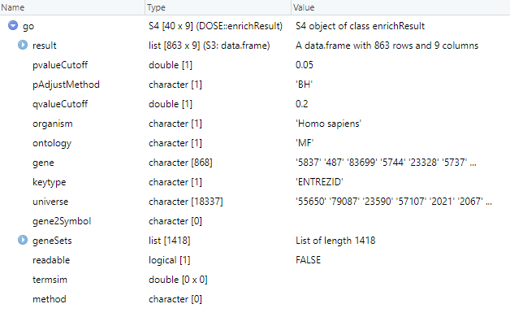or:
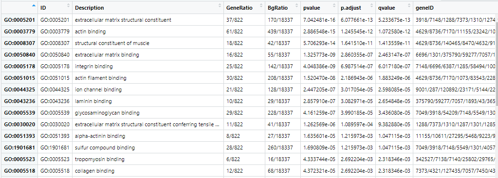2.Provide the filename you want to set.
1
2
3
4
5#' @param input input data. [dataframe or DGEExact]
#' @param filename the name of the output file.[character]
#' @param showInExcel open the output file in Excel or not.[logical]
render_clusterP_GO(input,filename,showInExcel)
data<-render_clusterP_GO(input,filename="test",showInExcel=FALSE)
Output effect:
- The first worksheet(clusterProfiler-4.2.0) : The rendered differential expression analysis data:
2.The second worksheet(ONTOLOGY) : The number of BP , CC and MF were classified and statistically displayed in a pie chart. The pie chart will also be saved locally:
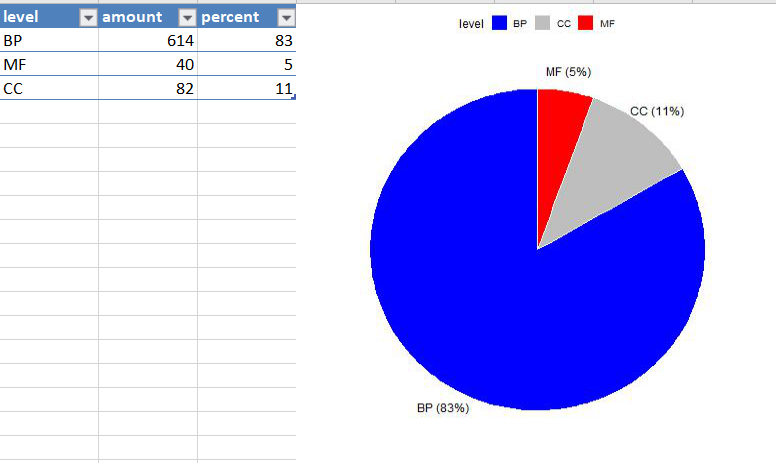render_clusterP_KEGG
- Add the KEGG database link for each term;
- Convert the output to a file in XLSX format, add comment information for the header, and render the default table style, such as font, size, and column width.
The original differential expression analysis was derived from the publication.
Procedures:
Provide the data you want to process as input, such as Large enrichResult or imported external TXT/CSV/Excel files as data frame and the rownames should be gene symbol ;
For example:
or:
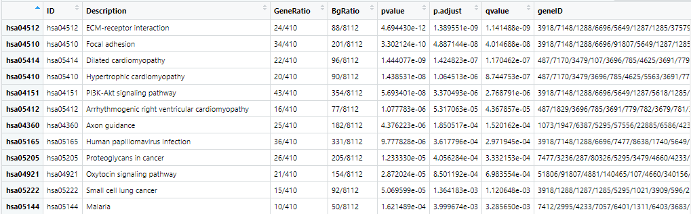2.Provide the filename you want to set.
1 | #' @param input input data. [dataframe or DGEExact] |
Output effect:
The first worksheet(clusterProfiler-4.2.0) : The rendered differential expression analysis data:
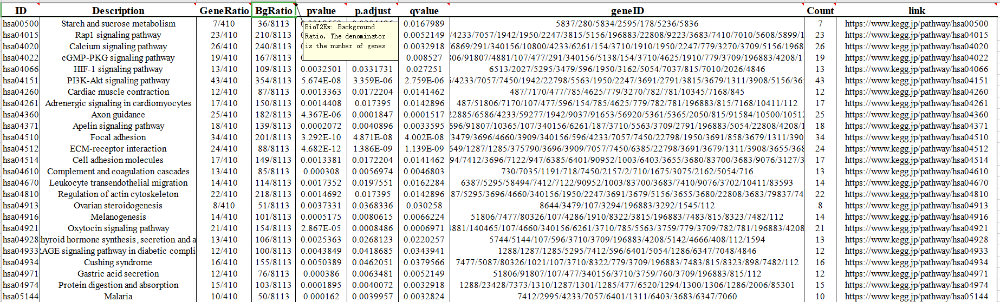Rendering the ChIP-seq analysis results
Currently BioT2Ex supports the ChIP-seq analysis results from ChIPseeker.
render_ChIPseeker
- Output the results in XLSX format;
- Add corresponding “Ensembl”, “Symbol”, “GeneName” and description of gene;
- Render the style of the XLSX output and add header comments.
The original data is downloaded from the GEO database.(GSE144195_combined_peaks_with_CTCF_motif.bed.gz).
Procedures:
- Provide the data you want to process as input;
- Provide the OrgDb (e.g., org.Hs.eg.db for human) for gene annotation and the corresponding taxonomy ID (e.g., taxID 9606 for human) .
1 | #' @param input input data. [dataframe or DGEExact] |
Output effect:
Basic functions of BioT2Ex in R
We also include some functions to further improve the readability of XLSX files.
add_Description
A function to add description of genes based on EntrezID. You need to provide the TaxID of the species and the column number of EntrezID (col.no).
1 | #' @param input input data. [dataframe] |
Output effect:
write_Out
This function appends the previously processed data into a workbook and names the workbook.
1 | #' @param input input data .[dataframe] |
Output effect:
add_HeadAnnotation
Add header comments to the output result. Users can select the default line header comments (currently only the output results of edgeR, DESeq2 and ChIPseeker are supported) or customize the list of line header comments.
1 | #' @param type the way to add head annotation.[character] |
Output effect:
add_Feature
This function modifies the tabular style of the output.This function will set a uniform font size for the output results, and add a gradient representing the expression level and size for the foldchange column. Red represents up and blue represents down.Users need to enter the column number of log2foldchange.
1 | #' @param input input data .dataframe |
Output effect:
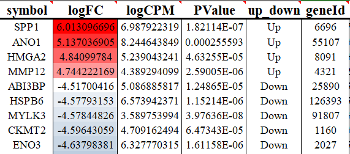
fix_Number
This function can select the numeric column in the file and makes it displays correctly.
1 | as.data.frame(a) |
showInExcel
A function to open selected directory or file in excel, this base fuction is copied from o function of yulab.utils(package).
1 | showInExcel(a,"mydata.xlsx") |
op
A function to open selected files (in Excel) automatically. This fuction is copied from o function of yulab.utils
1 | op(file='myfile') |
Running BioT2Ex in Python
BioT2Ex now supports the results of the MACS,MutSigCV,RSEM and ANNOVAR.
Annotate the analysis result of MACS
The data used for the example is from xx
BioT2Ex -m macs
Using this function will render the input data as follows: output the pre-comment and post-comment data in XLSX format, add gradients to the -log10(pvalue) column to represent the numerical size, and add header comments to the output table, beautifying the table font, alignment and formatting, etc.
1 | Python BioT2Ex -m macs [path of the inputfile] |
Output effect:
Annotate the analysis result of MutSigCV
The data used for the example is from this site.
BioT2Ex -m mutsigcv
Using this function to convert input data to XLSX format, add header comments, and render table style.
1 | Python BioT2Ex -m mutsigcv [path of the inputfile] |
Output effect:

Annotate the analysis result of RSEM
The data used for the example is from xx
BioT2Ex -m rsem
Using this function to convert input data to XLSX format, add header comments, and render table style.
1 | Python BioT2Ex -m rsem [path of the inputfile] |
Output effect:
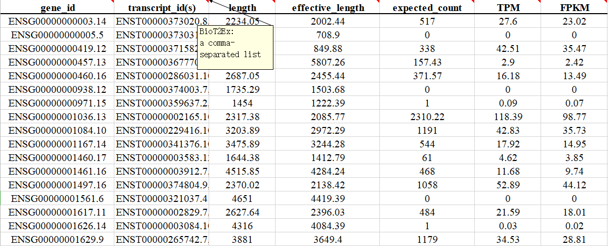